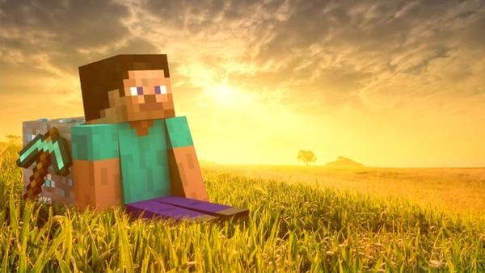
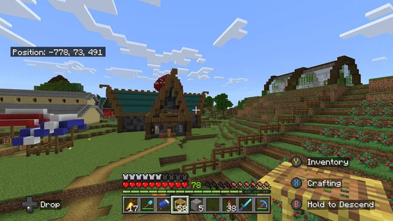
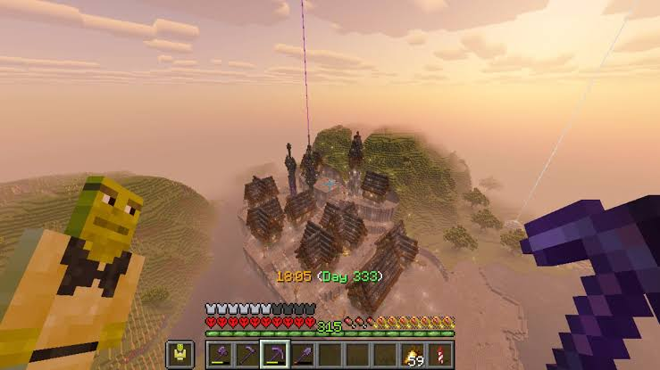

Minecraft é um jogo aventura, construção e sobrevivência.
Nele, os jogadores exploram um mundo aberto formado por blocos, coletam recursos, constroem estruturas e enfrentam criaturas em diferentes ambientes.
O jogo permite que cada jogador use a criatividade para criar casas, castelos, cidades, fazendas e até máquinas complexas. Além disso, é possível explorar cavernas, descobrir tesouros, viajar por dimensões misteriosas e lutar contra monstros, como zumbis, esqueletos e o temível Ender Dragon.
Modo Sobrevivência: No modo sobrevivência, o jogador precisa coletar recursos, como madeira, pedra e ferro, para fabricar ferramentas, construir abrigos e conseguir alimentos. Também é necessário se proteger de monstros, como zumbis e esqueletos, que aparecem principalmente durante a noite. O objetivo é sobreviver, explorar o mundo e superar os desafios encontrados pelo caminho.

O Modo Hardcore do Minecraft é uma variante extrema do modo Sobrevivência, projetada para testar o limite dos jogadores. Nele, a dificuldade fica permanentemente travada no Muito Difícil (Hard) e você possui apenas uma única vida: se morrer, não há como renascer. O mundo é perdido para sempre ou fica disponível apenas para exploração no modo Espectador.
